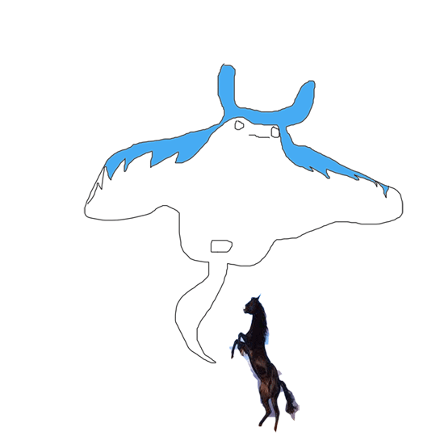

Introduction

Charlène Levasseur
Produces music performances, video clips and sometimes paintings
contact@charlenelevasseur.com
HTML5, CSS, Java, Json, Unity, C4D, Unity, Davinci Resolve, Lightroom, Ai, Id, Pr, Br, Ps, Ae, Fl, Traktor, Ableton Live, Pro Tools
A human being born and raised in the South West of France, Charlene studied the theory of contemporary art at the University of Art Michel Montaigne Bordeaux, fallowed by a degree in painting and new media at the Institut superieur des arts de Toulouse (isdaT).
Mostly producer and music lover, in 2017, she founds the label and collective Acolora. In 2019 she releases one podcast of techno called
Sans Blabla every month on Campus FM Toulouse.
Since 2020, she builds the radio of Gaswerksiedlung, in Berlin, mainly as programmer and creator of podcasts.
Presently she mixes one techno show per month called
KRKRKR for Sphere Radio in Leipzig. One hour explorations, studio mixing new releases, unreleases of own productions, friends’ productions, people that she likes, she also invites producers and Djs.
Charlene proposes also a visual reading of techno music with videos and paintings. In 2019, she produces a short film called
Don’t Walk Alone for the DJ and producer Pablo Mateo (Figure). In 2020, she releases a video clip called
Summer’s Cell for the producer and DJ Halosaur (Rhythm Cult).
In 2021, Charlene produces tracks for the label Collective/коллектив, she creates a second label called Associated Paraloboid with her agent Lea Tsamantakis based on physical and digital releases of Hardcore, Techno, Intelligent Music and Electronic.
Aside from Charlene’s personal work she does collabs with DJ’s, producer’s, labels, organisations: Fallen Metropolis, Diffuse Reality, Dan Su, Associated Paraboloid, Collective/коллектив, Sphere Radio, Rhythm Cult, Halosaur, Gaswerksiedlung, Galleri Heike Arndt DK, Insel Galerie, Armen Crew, Figure, Midnight Fantasy Entertainment, CampusFM, radioUDON, L’Annexe, Les Siestes Electroniques, Acolora, Roven, isdaT, Ensad, Michel Montaigne Bordeaux III, FIFIB, La Forêt Electrique, Jose Cabanis Media Library, La Cartoucherie, Le Printemps de Septembre, The Night Of The Cinema Of Gouges, Festival Olympe de Gouges, le DadA, le Synopsis, Kit: Exhibition Space, Aparte, Le Cri de la Mouette and Forbidden Zone
[Solo Exhibitions / Performances]
2021
05.09.21
Sukkube, livestream, Tapetown radio, Kaliningrad, Russia
18.08.21
KRKRKR 11, Podcast Guest’s Werfol, dj set, Sphere Radio, Leipzig, Germany
16.06.21
KRKRKR 10, live, modular system, Sphere Radio, Leipzig, Germany
12.06.21
Caramelo, live music performance, modular system, Chilien Area, Berlin, Germany
19.06.21
Outside, live music performance, modular system, Gaswerksiedlung’s garden, Berlin, Germany
23.03.21
Wild, installation of paintings, Gaswerksiedlung’s garden, Berlin, Germany
17.02.21
KRKRKR 6, dj set, Sphere Radio, Leipzig, Germany
20.01.21
KRKRKR 5, dj set, Sphere Radio, Leipzig, Germany
2020
06.12.20
Basement 28, music performance (4h), Basement 28, Berlin, Germany
16.12.20
KRKRKR 4, dj set, Sphere Radio, Leipzig, Germany
18.11.20
KRKRKR 3, dj set, Sphere Radio, Leipzig, Germany
21.10.20
KRKRKR 2, dj set, Sphere Radio, Leipzig, Germany
24.08.20
Festival 3 years Gaswerksiedlung, hybrid set, Flow, Berlin, Germany
2019
07.08.19
Analog Room, music performance, Officina Neukölln, Berlin, Germany
06.07.19
Sync System, music performance, radioUDON, Paris, France
12.05.19
Outsider French People, music performance, Cours Labbé, isdaT, Toulouse, France
17.03.19
The Nexus, paintings and music performance, 309, isdaT, Toulouse, France
[Group Exhibitions / Performances]
2021
21.08.21
Festival Gaswerksiedlunglive modular with les ephemeres, gART.n, Berlin, Germany
26.06.21
Risky Time dj set b2b Fragment, Chilien Area, Berlin, Germany
01.06.21
Secret Meeting, in da bathroom, interactive visual and sound installation, with Marion Lefeuvre, Villa Arson, Marseille, France
19.05.21
KRKRKR 9, Podcast Guest’s Katharina Bevand, live, Sphere Radio, Leipzig, Germany
14.03.21
Common Multiverse Initiative Festival, live music performance, modular system, online stream festival, WWW
14.03.21
Common Multiverse Initiative Festival, video clip, online stream festival, WWW
2020
26.06.20
Fresh Legs, multimedia installation, Insel Galerie, Berlin, Germany
03.02.20
Feeling Myself, multimedia installation with Aya Ando, Anna Bresoli, Flow, Berlin, Germany
2019
22.05.19
Première Presse_Repiquage, prints, fanzines curated by Louise Turner, Cartoucherie, Toulouse, France
05.04.19
Tchao Lenaz, music performance with Orque, curated by Julia Castel, Curupia, Toulouse, France
08.01.19
A4 – deuxième exposition, installation of posters, curated by Folle Beton, L’annexe, Paris, France
23.07.19
24 Carats, music performance with Orque, Ensad, Paris, France
29.05.19
HIER UND JETZT, multimedia installation «New York» curated by Léa Lascaud, KIT: Exhibition Space, Toulouse, France
11.04.19
Sojbdor & Orque invited by Midnight Fantasy Entertainment, Night Nurse, music performance, Campus Fm, Toulouse, France
03.04.19
Eglusha + CessFess, music performance with Orque, curated by Lea Lascaud, KIT: Exhibition Space, Toulouse, France
2018
20.10.18
Boum de l’Arène, music performance, Brozar, Toulouse, France
29.09.18
Les Siestes x Le Printemps de septembre, off with Orqua aka Eleonore Verger, 304, isdaT, Toulouse, France
13.09.18
GIRL SQUARE, multimedia installation, La Forêt électrique, Toulouse, France
20.07.18
Galex ?, music performance, Galerie exprmntl, Toulouse, France
20.06.18
Tonerre, music performance, curated by Gregoir Buffier, Le DadA, Toulouse, France
02.06.18
L’Ombre de la Mouche, music performance, Nébuleuse radio, Toulouse, France
13.05.18
Piece Montee, «STEAK HOUSE» & «PROJETFERRA 2060», multimedia installation, curated by Jean Pierre Castex and Patric Mellet, Library Jose Cabanis, Toulouse, France
15.03.18
Journees Portes Ouvertes de l'isdaT, music performance, Cours Labbé, isdaT, Toulouse, France
01.02.18
Before Oceanique, music performance, music performance, Cours Labbé, isdaT, Toulouse, France
2017
21.12.17
Get up! La fête est d’utilité publique, music performance, Cours d'honneur, Toulouse, France
18.10.17
Apotheose, music perfomance, curated by Aparte, Le Cri de la Mouette, Toulouse, France
10.09.17
Les Croisees Creatives, music performance, curated by Aparte, Le DadA, Toulouse, France
07.07.17
Les Dominicales d’Aparte, music performance, La Maison, Toulouse, France
14.06.17
Laresparc Before After, music performance, with Clement Chalm, Patrice Gogue, performance, Forbiden Zone, Toulouse, France
[Publications & Texts]
2020
Freaky Freaky, magazine of about contemporary visual art news, text by Naouel + Alicia
2019
N°14, Place à ..., Roven, contemporary art drawing magazine, text by Johana Carrier and Marine Pages
2018
Pièce Montee, Le Point Contemporain, text by Valérie Toubas and Daniel Guionnet
2015
Estudiantine, interview from Lise Taris and Dorian Falconnet
2015
Les Encres Oniriques, interview from François Lesparre
[Radio Residencies]
2021
Sphere Radio, Leipzig (DE)
2020
CampusFM Radio, Toulouse (FR)
instagram
soundcloud
bandcamp
youtube
mixcloud
vimeo